Full Stack System
Wardline Medical Operations Tracker
Enterprise clinic and hospital department workflow tracker. Designed for high-concurrency ward operations, real-time patient status transitions, doctor scheduling, and RESTful state synchronizations.